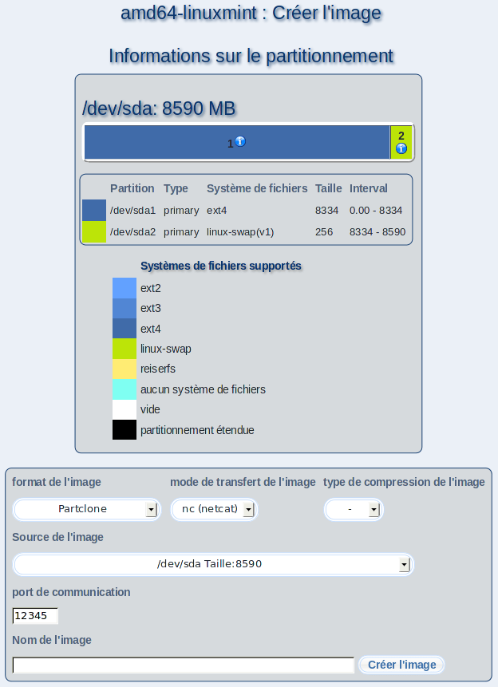

Par ce dialogue, vous pouvez créer des fichiers image de partitions ou de disques durs entiers d'un poste client; ultérieurement, vous pourrez utiliser ces images pour l'installation d'autres postes client.
Pour cela, choisissez le format de l'image souhaité, le mode de transfert de l'image et la type de compression de l'image.
Dépendant du format de l'image, il est nécessaire que vous saisissiez des informations additionelles dans le champ «Source de l'image», par exemple quelle partition ou quel disque a été enregistré dans le fichier image.
Choisissez ensuite un nom pour votre fichier et saisissez le dans le champ «Nom de l'image».
Enfin, cliquez sur «Créer l'image».
Vous pouvez accéder une vue d'ensemble de tous les fichiers images chez "Configurations du serveur"
"Administrer les fichiers image", où vous pouvez aussi effacer les fichiers images dont vous n'avez plus besoin.
Si vous désirez utiliser le fichier image que vous avez créé ici pour l'installation d'un poste client, choisissez "Imaging" comme distribution pendant la "Configuration" du poste client.
Sous-sections
dodger
2014-01-22